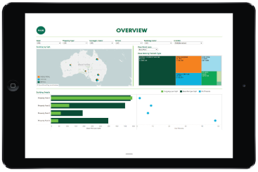

---
---
Pulse Aspire

PULSE ASPIRE is our business analytics tool which:
- Integrates CBRE and Client Name’s data sources into a single view dashboard creating a high-level visual outlook, allowing you to review asset performance and make nimble decisions.
- Unlimited dashboard drill-downs across financial, arrears, key dates, service requests and sustainability views – customised to Client Name’s requirements within just a few clicks.
- Accessible across all web-enabled devices that allow for faster decision making using real-time
- One view allowing the team to pro-actively respond to risk and maximise opportunities
Your Advantage
- Highlight areas of risk and opportunity across your portfolio
- Make better decisions, backed by data
- Solve problems you never knew you had
- Puts you in control of your data, anywhere, anytime